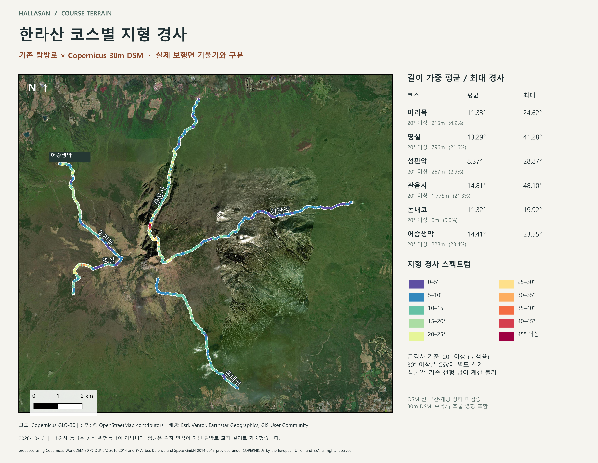

1. 코스별 결과와 계산 의미
코스 요약 CSV · 급경사 55구간 CSV · 셀 교차 선분 2,979개 CSV
입력 선형은 기존 OSM 6코스입니다. 석굴암은 선형이 없어 값이 비어 있습니다. 원자료에서 끝점이 맞닿는 조각만 합쳤을 때 코스마다 하나의 연결 선형이 되었고, 원래 길이를 보존했습니다. 빈 구간을 새로 그리거나 공식 탐방로 입구를 추정하지 않았습니다.
여기서 경사는 탐방로 위치의 지형 경사입니다. DEM 표면이 가장 가파르게 기울어지는 방향의 각도이며, 길의 진행 방향 경사·계단 기울기·보행 난이도를 직접 측정한 값이 아닙니다. 30m DSM에는 나무와 구조물이 포함될 수 있습니다. 기존 선형의 공식 전 구간 및 현재 개방 여부도 미검증입니다.
각 선을 30m 래스터 셀 경계에서 나누고, 그 셀의 경사값을 대응시켰습니다. 평균은 Σ(경사각 × 셀 안의 선 길이) / Σ(유효 선 길이)입니다. 최대는 길이가 0보다 큰 교차 선분이 지나간 셀 중 최대값입니다. 20° 이상을 분석용 급경사 기준으로 정했고 30° 이상도 별도로 집계했습니다. 공식 위험등급이 아닙니다. 짧게 접하는 셀도 포함하므로 최대값과 아주 짧은 급경사 구간은 위치·해상도에 민감합니다.
steep_sections.csv는 연속해서 20° 이상인 선분을 합친 구간입니다. seg_id로 QGIS와 연결하고 start_lon/start_lat, end_lon/end_lat로 위치를 찾습니다. from_m/to_m은 저장된 연결 선형의 시작점 기준입니다. 공식 탐방로 입구 기준 거리로 해석하면 안 됩니다. short30=1은 길이 30m 미만 구간입니다.
전체 스펙트럼 지도 · 6코스 급경사 상세 지도

2. ZIP을 푼 다음 무엇을 열어야 하나요?
- ZIP 전체를 하나의 폴더에 풀고 폴더 구조와 파일 이름을 유지합니다.
- QGIS에서 프로젝트 → 열기 → hallasan_course_slope.qgs를 선택합니다. SHP 파일 하나만 여는 것과 다릅니다.
- 기본 화면은 위성배경 위에 경사값으로 색칠한 탐방로가 보입니다. 레이어 패널에서 01 코스 분석을 펼치세요.
- 급경사만 강조하려면 급경사 연속 구간을 켜고 탐방로 위치의 지형 경사를 끕니다. 구간 ID가 나타납니다.
- 한라산 전체 면 경사를 보려면 02 전체 지형 → 경사구간 면을 켭니다. 500m 통계만 보려면 경사구간 면을 끄고 500m 격자 면을 켭니다. 두 면 레이어를 동시에 진하게 켜면 서로 가립니다.
- 코스별 평균 하나의 값으로 색칠하려면 코스별 평균 지형 경사를 켜고 셀별 선분을 끕니다. 같은 코스가 하나의 평균 색으로 보입니다.
레이어는 지도에 얹는 자료 묶음입니다. 폴리곤은 그 레이어 안에 있는 개별 면 도형입니다. 예를 들어 격자 레이어 하나 안에 격자 폴리곤 1,849개가 있습니다. 단일 심볼로 표시된다고 해서 속성값이나 도형이 하나라는 뜻은 아닙니다.
색이 하나로만 보이면 .shp만 불러왔거나 기존 단일 심볼 스타일이 남아 있을 수 있습니다. .qgs를 열거나 레이어 속성 → 스타일 → 스타일 불러오기에서 같은 이름의 .qml을 적용하세요. 투영이 어긋난다고 레이어의 좌표계 정의를 임의로 바꾸지 마세요. 배경은 EPSG:3857이며 프로젝트가 EPSG:32652로 화면 재투영합니다.
3. 모든 데이터 레이어의 역할
05 인쇄지도 전용에는 상세 지도를 저장하기 위해 같은 코스 요약·급경사 자료를 코스별로 필터한 보기 12개가 있습니다. 새로운 측정자료가 추가된 것이 아닙니다. 기본 지도에서는 꺼져 있으며 펼치거나 수정할 필요가 없습니다. 실제 데이터는 위의 13종이고, 프로젝트에는 인쇄용 보기까지 25개 레이어 항목이 있습니다.
차이: 500m 격자 면은 넓은 면적을 평균낸 통계 단위이고, 경사구간 면은 30m 셀에서 유래한 세부 경사 분포입니다. 코스 선분은 탐방로가 그 셀을 지나는 위치만 나타냅니다. 국립공원 경계와 전체 분석 범위는 서로 다르며, 기존 전체 격자를 유지했기 때문에 해안 쪽 일부 격자는 수면을 포함합니다.
4. 스펙트럼 색상과 칼럼 설정
새 프로젝트에는 아래 색상을 적용했습니다. 낮은 값은 보라/파랑, 높은 값은 노랑/주황/빨강 계열입니다. 단순한 장식 그라데이션이 아니라 숫자 구간별 고정 색입니다.
직접 설정할 때
- 레이어 더블클릭 → 심볼(Symbology)을 엽니다.
- slope_classes 또는 trail_slope_pieces: 단일 심볼 대신 분류값 사용 / Categorized → 값(칼럼)
class_id → 분류 → 코드 1~10에 위 색상 적용. 면은 외곽선을 없애고 불투명도 약 40%, 선은 0.9~1.0mm부터 조절합니다. - grid_slope_500m 또는 course_summary: 단계 구분 / Graduated → 값
mean_deg → 색상표 Spectral. 낮은 값이 보라/파랑이 되도록 방향을 확인·반전합니다. 범위는 0–5, 5–10, …, 40–45, 45–90으로 수동 수정하세요. 자동 분위수로 다시 분류하면 기존 지도와 의미가 달라집니다. - 최대값을 보고 싶으면 위의 값 칼럼을
max_deg로 바꾸고 제목도 최대 경사로 바꿉니다. 평균과 최대는 다른 지표입니다. mean_pct는 퍼센트이므로 각도용 범례에 그대로 넣지 않습니다. - slope_degrees_30m.tif: 밴드 1 → 단일 밴드 유사색상 / Singleband pseudocolor → 이산 색상, 같은 구간/색상. 정확히 기존 모양을 재현하려면 제공한 QML을 불러오세요.
- 적용 후 프로젝트 저장. SHP만 다른 곳으로 전달할 때에는 같은 이름의 QML도 함께 전달합니다.
숫자형 값의 단계 구분은 QGIS 경계값 포함 규칙을 따릅니다. 원래 class_id는 [0,5), [5,10), …, [45,90] 방식으로 계산했습니다. 정확한 원래 분류가 필요하면 이 코드와 제공 스타일을 사용하세요.
속성표와 칼럼
레이어 우클릭 → 속성 테이블 열기로 값을 봅니다. 새 프로젝트에는 원래 영문 칼럼을 유지하면서 한글 별칭을 넣었습니다. 속성 → 필드(Fields)에서 실제 이름·형식·별칭을 확인할 수 있습니다. SHP 칼럼명은 길이 제한이 있어 짧게 두었습니다. 파일 연결에는 grid_id, course_id, seg_id를 사용합니다.
색상용 우선 칼럼: 세부 면/선 = class_id, 격자/코스 평균 = mean_deg, 최대 = max_deg, 급경사 정도 = steep20_pc. 마지막 칼럼은 0–100% 비율이므로 각도 범례와 별도로 설정합니다.
급경사 목록 찾기: steep_sections 속성표에서 length_m을 내림차순 정렬하거나 course로 필터합니다. 특정 구간은 "seg_id" = 'C04S001'처럼 찾고 선택 피처로 확대합니다. 기준을 바꿀 때는 trail_slope_pieces에서 "slope_deg" >= 30을 필터하세요. 필터는 표시만 바꾸며 기존 course_summary 통계를 다시 계산하지는 않습니다.
QGIS 공식 벡터 스타일·필드 설명 · 래스터 유사색상 설명
5. 모든 칼럼 사전
아래 항목을 펼치면 각 SHP의 칼럼을 전부 볼 수 있습니다. 전체 사전 CSV · 분류·HEX 색상 CSV
trail_slope_pieces · 18개 칼럼
steep_sections · 16개 칼럼
course_summary · 16개 칼럼
reference_trails · 4개 칼럼
slope_classes · 7개 칼럼
grid_slope_500m · 33개 칼럼
study_boundary · 2개 칼럼
reference_park · 3개 칼럼
reference_labels · 4개 칼럼
6. World Imagery, Copernicus, AWS의 관계
수치 계산
Copernicus GLO-30
↓ AWS 공개 S3에서 원자료 다운로드
↓ 로컬 QGIS/GDAL 재투영·Horn 경사 계산
↓ 탐방로 교차·길이 가중 통계
지도 배경
Esri World Imagery
↓ 좌표 있는 위성/항공영상
↓ 로컬 배경 TIFF
↓ 계산 결과와 겹쳐 PNG 출력
World Imagery에서 Copernicus 경사를 계산한 것이 아닙니다. 서로 다른 자료입니다. ArcGIS 서버는 위치를 알아보기 위한 배경에만 사용했고, AWS는 공개 DEM 파일을 내려받은 저장소였습니다. 이번 계산은 로컬에서 수행했으며 사용자 AWS 계정에 결과를 저장하거나 새 서버·버킷을 생성하지 않았습니다.
A. AWS에 이미 있는 Copernicus 원자료 받기
AWS 공식 공개자료 등록 페이지 · 데이터 설명 · 이번 계산에 사용한 N33 E126 원본 GeoTIFF 바로 다운로드
공개 버킷은 s3://copernicus-dem-30m, 리전은 eu-central-1입니다. 다운로드에는 AWS 계정이나 키가 필요 없습니다. AWS CLI가 설치되어 있다면 다음 명령을 사용할 수 있습니다.
aws s3 cp "s3://copernicus-dem-30m/Copernicus_DSM_COG_10_N33_00_E126_00_DEM/Copernicus_DSM_COG_10_N33_00_E126_00_DEM.tif" "copernicus_N33_E126.tif" --no-sign-request --region eu-central-1
이 타일은 제주를 포함하는 원본 표면고도 DSM입니다. 경사 래스터 자체가 아닙니다. 다운로드 후 EPSG:32652 / 30m로 재투영(이중선형), Horn 경사 계산(수직/수평 m, scale=1)을 거쳐 이번 결과가 만들어졌습니다. AWS의 공개 원본 버킷에 사용자의 계산 결과를 업로드하는 것은 불가능하며, 본인 버킷을 따로 사용해야 합니다.
B. 결과를 본인의 AWS S3에 저장하기
- S3 콘솔에 본인 계정으로 로그인합니다.
- 일반 목적 버킷을 만들거나 쓰기 권한이 있는 기존 버킷을 선택합니다. 서울 리전 예시는
ap-northeast-2입니다. 버킷 이름은 본인 소유의 실제 이름을 사용합니다. hallasan/2026-10-13/ 폴더(접두사)를 만들고 결과 ZIP, CSV, PNG를 업로드합니다. 프로젝트를 보존하려면 ZIP 전체가 편리합니다. 풀린 폴더를 올릴 때에는 QGS의 상대 경로와 하위 폴더 구조를 유지해야 합니다.- 비공개 저장 상태를 유지하고 공유할 파일에 객체 작업 → 미리 서명된 URL로 공유를 사용하면 시간 제한 다운로드 링크를 만들 수 있습니다.
업로드에는 본인 AWS 계정의 쓰기 권한이 필요하고 저장·요청·전송 요금은 사용량에 따라 발생합니다. 아래는 실행 예시이며 YOUR-BUCKET, YOUR-PROFILE을 실제 값으로 바꿔야 합니다. 이 안내에서는 명령을 실행하지 않았습니다.
aws s3 cp "hallasan_course_slope_QGIS_v2.zip" "s3://YOUR-BUCKET/hallasan/2026-10-13/hallasan_course_slope_QGIS_v2.zip" --region ap-northeast-2 --profile YOUR-PROFILE
aws s3 presign "s3://YOUR-BUCKET/hallasan/2026-10-13/hallasan_course_slope_QGIS_v2.zip" --expires-in 3600 --region ap-northeast-2 --profile YOUR-PROFILE
s3://YOUR-BUCKET/...는 S3 객체 주소이며 일반 브라우저용 공개 다운로드 링크가 아닙니다. 위 presign 명령이 반환하는 HTTPS URL이 실제 공유 링크입니다. 예시는 1시간 유효하며, 사용하는 임시 자격 증명이 먼저 만료되면 링크도 먼저 만료될 수 있습니다. 본인 버킷이 아직 지정되지 않아 이번 결과의 실제 AWS 다운로드 링크는 생성하지 않았습니다.
S3는 파일 저장소입니다. QGS를 올리는 것만으로 웹에서 QGIS 지도 서비스가 실행되지는 않습니다. 이번 요청처럼 파일 다운로드·PNG 열람은 S3 저장으로 처리할 수 있습니다.
원자료와 결과를 배포할 때 Copernicus 출처·라이선스 고지를 유지하세요. 배경영상이 들어간 PNG에는 Esri 및 영상 공급자 출처를 유지합니다. Esri 원시 배경 TIFF의 공개 재배포나 타일 서비스 재호스팅은 정적 지도 PNG 이용과 범위가 다르므로 해당 이용조건을 별도로 확인해야 합니다.
AWS 버킷 시작 안내 · 파일 업로드 안내 · 다운로드 링크 공유 안내 · presign 명령 · Esri 정적 지도 이용·출처 표시
출처와 검증 기록
고도·배경 원자료와 처리 방법 · 코스 교차 집계 방법 · 최종 검증 결과
© OpenStreetMap contributors · ODbL 및 저작권 안내
Copernicus WorldDEM-30 출처와 필수 고지는 terrain_metadata.json에 포함됩니다. VWorld 화면 분석값을 수집한 자료가 아닙니다.